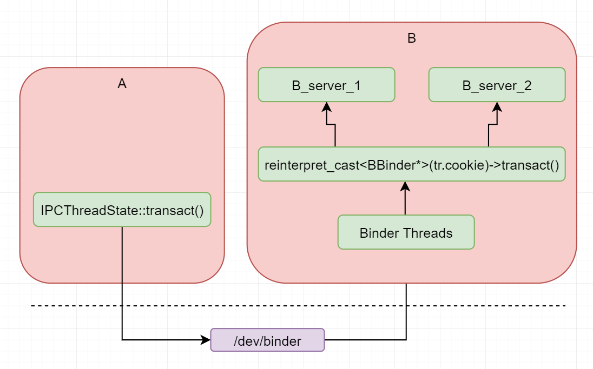

Binder Native Services
分析Binder通信Native服务区启动原理，ProcessState、IPCThreadState如何做到不同service的调用、处理
Thread Specific Data
-
多线程独立拥有全局变量
ProcessState
每个进程只有一个ProcessState，所以它是独一无二的，由于ProcessState的惟一性，因此一个进程只打开设备一次
ProcessState::self()创建ProcessState，一个进程只能打开一次binder文件节点
// frameworks/native/libs/binder/ProcessState.cpp
const char* kDefaultDriver = "/dev/binder";
// ...省略
sp<ProcessState> ProcessState::self()
{
Mutex::Autolock _l(gProcessMutex);
if (gProcess != nullptr) {
return gProcess;
}
gProcess = new ProcessState(kDefaultDriver);
return gProcess;
}
// ...省略
static int open_driver(const char *driver)
{
int fd = open(driver, O_RDWR | O_CLOEXEC);
if (fd >= 0) {
int vers = 0;
status_t result = ioctl(fd, BINDER_VERSION, &vers);
if (result == -1) {
ALOGE("Binder ioctl to obtain version failed: %s", strerror(errno));
close(fd);
fd = -1;
}
if (result != 0 || vers != BINDER_CURRENT_PROTOCOL_VERSION) {
ALOGE("Binder driver protocol(%d) does not match user space protocol(%d)! ioctl() return value: %d",
vers, BINDER_CURRENT_PROTOCOL_VERSION, result);
close(fd);
fd = -1;
}
size_t maxThreads = DEFAULT_MAX_BINDER_THREADS;
result = ioctl(fd, BINDER_SET_MAX_THREADS, &maxThreads);
if (result == -1) {
ALOGE("Binder ioctl to set max threads failed: %s", strerror(errno));
}
} else {
ALOGW("Opening '%s' failed: %s\n", driver, strerror(errno));
}
return fd;
}
ProcessState::ProcessState(const char *driver)
: mDriverName(String8(driver))
, mDriverFD(open_driver(driver))
, mVMStart(MAP_FAILED)
, mThreadCountLock(PTHREAD_MUTEX_INITIALIZER)
, mThreadCountDecrement(PTHREAD_COND_INITIALIZER)
, mExecutingThreadsCount(0)
, mMaxThreads(DEFAULT_MAX_BINDER_THREADS)
, mStarvationStartTimeMs(0)
, mManagesContexts(false)
, mBinderContextCheckFunc(nullptr)
, mBinderContextUserData(nullptr)
, mThreadPoolStarted(false)
, mThreadPoolSeq(1)
, mCallRestriction(CallRestriction::NONE)
{
if (mDriverFD >= 0) {
// mmap the binder, providing a chunk of virtual address space to receive transactions.
mVMStart = mmap(nullptr, BINDER_VM_SIZE, PROT_READ, MAP_PRIVATE | MAP_NORESERVE, mDriverFD, 0);
if (mVMStart == MAP_FAILED) {
// *sigh*
ALOGE("Using %s failed: unable to mmap transaction memory.\n", mDriverName.c_str());
close(mDriverFD);
mDriverFD = -1;
mDriverName.clear();
}
}
LOG_ALWAYS_FATAL_IF(mDriverFD < 0, "Binder driver could not be opened. Terminating.");
}
ThreadPool
最终分析结果感觉这个线程池的概念像是创建线程
ProcessState::self()->startThreadPool();
线程池只能创建一次；
第一次主要是创建主线程；
执行PoolThread的threadLoop；
// frameworks/native/libs/binder/ProcessState.cpp
class PoolThread : public Thread
{
public:
explicit PoolThread(bool isMain)
: mIsMain(isMain)
{
}
protected:
virtual bool threadLoop()
{
IPCThreadState::self()->joinThreadPool(mIsMain);
return false;
}
const bool mIsMain;
};
void ProcessState::startThreadPool()
{
AutoMutex _l(mLock);
if (!mThreadPoolStarted) {
mThreadPoolStarted = true;
spawnPooledThread(true);
}
}
String8 ProcessState::makeBinderThreadName() {
int32_t s = android_atomic_add(1, &mThreadPoolSeq);
pid_t pid = getpid();
String8 name;
name.appendFormat("Binder:%d_%X", pid, s);
return name;
}
void ProcessState::spawnPooledThread(bool isMain)
{
if (mThreadPoolStarted) {
String8 name = makeBinderThreadName();
ALOGV("Spawning new pooled thread, name=%s\n", name.string());
sp<Thread> t = new PoolThread(isMain);
t->run(name.string());
}
}
IPCThreadState::self()
采用Thread Specific Data机制，生成IPCThreadState数据，这样每个线程有自己的IPCThreadState
new IPCThreadState的时候会调用pthread_setspecific(gTLS, this)
IPCThreadState::self()->joinThreadPool(mIsMain);
mOut.writeInt32(isMain ? BC_ENTER_LOOPER : BC_REGISTER_LOOPER);
BC_ENTER_LOOPER
BC_REGISTER_LOOPER
if(result == TIMED_OUT && !isMain)
非主线程，直接退出break
IPCThreadState* IPCThreadState::self()
{
if (gHaveTLS) {
restart:
const pthread_key_t k = gTLS;
IPCThreadState* st = (IPCThreadState*)pthread_getspecific(k);
if (st) return st;
return new IPCThreadState;
}
if (gShutdown) {
ALOGW("Calling IPCThreadState::self() during shutdown is dangerous, expect a crash.\n");
return nullptr;
}
pthread_mutex_lock(&gTLSMutex);
if (!gHaveTLS) {
int key_create_value = pthread_key_create(&gTLS, threadDestructor);
if (key_create_value != 0) {
pthread_mutex_unlock(&gTLSMutex);
ALOGW("IPCThreadState::self() unable to create TLS key, expect a crash: %s\n",
strerror(key_create_value));
return nullptr;
}
gHaveTLS = true;
}
pthread_mutex_unlock(&gTLSMutex);
goto restart;
}
void IPCThreadState::joinThreadPool(bool isMain)
{
LOG_THREADPOOL("**** THREAD %p (PID %d) IS JOINING THE THREAD POOL\n", (void*)pthread_self(), getpid());
mOut.writeInt32(isMain ? BC_ENTER_LOOPER : BC_REGISTER_LOOPER);
status_t result;
do {
processPendingDerefs();
// now get the next command to be processed, waiting if necessary
result = getAndExecuteCommand();
if (result < NO_ERROR && result != TIMED_OUT && result != -ECONNREFUSED && result != -EBADF) {
ALOGE("getAndExecuteCommand(fd=%d) returned unexpected error %d, aborting",
mProcess->mDriverFD, result);
abort();
}
// Let this thread exit the thread pool if it is no longer
// needed and it is not the main process thread.
if(result == TIMED_OUT && !isMain) {
break;
}
} while (result != -ECONNREFUSED && result != -EBADF);
LOG_THREADPOOL("**** THREAD %p (PID %d) IS LEAVING THE THREAD POOL err=%d\n",
(void*)pthread_self(), getpid(), result);
mOut.writeInt32(BC_EXIT_LOOPER);
talkWithDriver(false);
}
IPCThreadState::IPCThreadState()
: mProcess(ProcessState::self()),
mWorkSource(kUnsetWorkSource),
mPropagateWorkSource(false),
mStrictModePolicy(0),
mLastTransactionBinderFlags(0),
mCallRestriction(mProcess->mCallRestriction)
{
pthread_setspecific(gTLS, this);
clearCaller();
mIn.setDataCapacity(256);
mOut.setDataCapacity(256);
mIPCThreadStateBase = IPCThreadStateBase::self();
}
mIn、mOut是什么？Parcel类型的，可以认为是收发两个缓冲区；
对应binder_write_read结构体的read_buffer、write_buffer；
* frameworks/native/libs/binder/IPCThreadState.cpp
* status_t IPCThreadState::talkWithDriver(bool doReceive)
* bwr.write_size = outAvail;
* bwr.write_buffer = (uintptr_t)mOut.data();
* if (ioctl(mProcess->mDriverFD, BINDER_WRITE_READ, &bwr) >= 0)
* mOut.setDataSize(0);
* processPostWriteDerefs();
* mIn.setDataSize(bwr.read_consumed);
* mIn.setDataPosition(0);
auto spawn binder thread
-
只要调用 spawnPooledThread()函数就创建了一个binder线程，因此从代码上来看除了第一个主binder线程由APP用户态主动创建外，其它的都是由Binder驱动主动向APP申请创建，也就是说binder线程的创建是看binder驱动是否很繁忙(这里的繁忙是与本进程相关的)，来决定是否需要向APP进程申请创建，也就是APP进程被动创建；
binder最终的通信包括client和server双方。server方并不知道什么时候会有client的请求，client的有请求，它就直接丢给binder驱动，然后由binder驱动根据当前server的能力(是否有多余线程去处理)去看下是否需要新的线程来处理client的请求；
* frameworks/native/libs/binder/IPCThreadState.cpp
* status_t IPCThreadState::waitForResponse(Parcel *reply, status_t *acquireResult)
* while (1)
* err=talkWithDriver()
* cmd = (uint32_t)mIn.readInt32();
* switch (cmd)
* default:
* err = executeCommand(cmd);
* status_t IPCThreadState::executeCommand(int32_t cmd)
* switch ((uint32_t)cmd)
* case BR_SPAWN_LOOPER:
* mProcess->spawnPooledThread(false);
* String8 name = makeBinderThreadName();
* sp<Thread> t = sp<PoolThread>::make(isMain);
* frameworks/native/libs/binder/ProcessState.cpp
* class PoolThread : public Thread
* IPCThreadState::self()->joinThreadPool(mIsMain);
* result = getAndExecuteCommand();
* result = talkWithDriver();
* t->run(name.string());
defaultServiceManager
* frameworks/native/libs/binder/IServiceManager.cpp
* sp<IServiceManager> defaultServiceManager()
* sm = interface_cast<AidlServiceManager>(ProcessState::self()->getContextObject(nullptr));
* frameworks/native/libs/binder/ProcessState.cpp
* sp<IBinder> context = getStrongProxyForHandle(0);
* return context;
* gDefaultServiceManager = sp<ServiceManagerShim>::make(sm);
* frameworks/native/libs/binder/IServiceManager.cpp
* class ServiceManagerShim : public IServiceManager
* ServiceManagerShim::ServiceManagerShim(const sp<AidlServiceManager>& impl) : mTheRealServiceManager(impl)
* mTheRealServiceManager(impl)
* return gDefaultServiceManager;
add service
-
addService
为每一个服务构造flat_binder_object结构体
调用ioctl发送数据
数据中有flat_binder_object
服务的名字
目的handle = 0(ServiceManager)
驱动程序为每一个flat_binder_object构造binder_node节点，一个binder_node节点代表一个服务。binder_node节点里面包含
ptr: 对应函数处理方法
cookie
proc: 指向当前进
驱动程序根据handle = 0找到SM，并把数据发送给SM的todo链表，并构造binder_ref节点，即服务的引用。
ServiceManager
驱动程序会在SM的内核态构造binder_ref节点，里面包含
binder_ref:
desc 一个数字，依据服务注册的顺序递增
node 指向上面讲的binder_node节点
同时SM在用户态会构造一个serverlist链表，serverlist里面包含
name 服务的名字
handle 等于上面的desc
getService
Client端获取服务过程
构造数据，数据中包含想要获取的服务名称和目的即handle=0
调用ioctl发送数据
根据handle = 0找到SM
SM从serverlist中根据name找到相应的handle,并返回flat_binder_object结构体，里面包含handle(想要获取服务的handle)
驱动程序会创建一个binder_ref节点，里面的node指向SM中binnder_ref的node
服务的使用
服务的使用过程，同样是先构造数据，code(想要调用哪个函数)，handle(对应服务的引用)，再调用ioctl发送数据
驱动程序会设置ptr和cookie,驱动程序根据handle找到binder_ref–>binder_node–>binder_proc.Server端接收到数据后根据prt和cookie调用不用的服务。
小结
最核心的函数ioctl
client端最核心的数据handle
server端最核心的数据ptr/cookie
当我们add service的时候，其实是把服务的对象地址保存到了binder驱动，并映射成一个handle给client；
这个指针又cookie字段保存；
* frameworks/native/libs/binder/IServiceManager.cpp
* sp<IServiceManager> defaultServiceManager()
* sm = interface_cast<AidlServiceManager>(ProcessState::self()->getContextObject(nullptr));
* frameworks/native/libs/binder/ProcessState.cpp
* sp<IBinder> context = getStrongProxyForHandle(0);
* return context;
* gDefaultServiceManager = sp<ServiceManagerShim>::make(sm);
* frameworks/native/libs/binder/IServiceManager.cpp
* class ServiceManagerShim : public IServiceManager
* ServiceManagerShim::ServiceManagerShim(const sp<AidlServiceManager>& impl) : mTheRealServiceManager(impl)
* mTheRealServiceManager(impl)
* return gDefaultServiceManager;
* status_t ServiceManagerShim::addService(const String16& name, const sp<IBinder>& service, bool allowIsolated, int dumpsysPriority)
* Status status = mTheRealServiceManager->addService(String8(name).c_str(), service, allowIsolated, dumpsysPriority);
* out/soong/.intermediates/frameworks/native/libs/binder/libbinder/android_arm_armv8-a_shared/gen/aidl/android/os/IServiceManager.cpp
* ::android::binder::Status BpServiceManager::addService(const ::std::string& name, const ::android::sp<::android::IBinder>& service, bool allowIsolated, int32_t dumpPriority)
* _aidl_ret_status = _aidl_data.writeStrongBinder(service);
* frameworks/native/libs/binder/Parcel.cpp
* status_t Parcel::writeStrongBinder(const sp<IBinder>& val)
* return flattenBinder(val);
* BBinder* local = nullptr;
* if (binder) local = binder->localBinder();
* if (local) local->setParceled();
* obj.cookie = reinterpret_cast<uintptr_t>(local);
* cookie中传的是指针
onTransact如何被调用
Android底层：通熟易懂的分析binder–3. 探究binder全流程通信之请求篇
tr.cookie其实就是BBinder对象，这时候开始调用BBinder的transact方法，这是通往上层的入口
当我们add service的时候，其实是把服务的对象地址保存到了binder驱动，并映射成一个handle给client；
需要理解的是Binder通信是负责通信，Binder对象是对象，两者不能混淆，Binder对象调用，从驱动那边可以获取到Binder对象，所以可以调用到对象的transact函数，继而调用到对象的onTransact()
virtual status_t onTransact(uint32_t code, const Parcel& data, Parcel* reply, uint32_t flags = 0)
接收数据
* frameworks/native/libs/binder/IPCThreadState.cpp
* status_t IPCThreadState::getAndExecuteCommand()
* result = talkWithDriver();
* cmd = mIn.readInt32();
* result = executeCommand(cmd);
* switch ((uint32_t)cmd)
* case BR_TRANSACTION:
* binder_transaction_data& tr = tr_secctx.transaction_data;
* result = mIn.read(&tr, sizeof(tr));
* 所有的数据是从驱动中读取的，tr.cookie，也就是当我们add service的时候，其实是把服务的对象地址保存到了binder驱动，并映射成一个handle给client；
* Parcel buffer;
* buffer.ipcSetDataReference(reinterpret_cast<const uint8_t*>(tr.data.ptr.buffer), tr.data_size, reinterpret_cast<const binder_size_t*>(tr.data.ptr.offsets), tr.offsets_size/sizeof(binder_size_t), freeBuffer);
* error = reinterpret_cast<BBinder*>(tr.cookie)->transact(tr.code, buffer, &reply, tr.flags);
* frameworks/native/libs/binder/include/binder/Binder.h
* virtual status_t transact(uint32_t code, const Parcel& data, Parcel* reply, uint32_t flags = 0) final;
* frameworks/native/libs/binder/Binder.cpp
* status_t BBinder::transact(uint32_t code, const Parcel& data, Parcel* reply, uint32_t flags)
* switch (code)
* err = onTransact(code, data, reply, flags);
* class SystoolService : public BBinder
* virtual status_t onTransact(uint32_t code, const Parcel& data, Parcel* reply, uint32_t flags = 0)
* SystoolFunc func = getSystoolFunc(code);
* (*func)(data, reply);

transact
status_t IPCThreadState::transact(int32_t handle, uint32_t code, const Parcel& data, Parcel* reply, uint32_t flags)
发送数据
virtual status_t onTransact(uint32_t code, const Parcel& data, Parcel* reply, uint32_t flags = 0)
接收数据
* frameworks/base/core/java/com/droid/os/NativeBinder.java
* public static int ExecShellCmd(String cmd)
* IBinder mRemote = getSystoolBinderService();
* mRemote.transact(IPC_FUNC_ExecShellCmd, data, reply, 0);
* frameworks/native/libs/binder/include/binder/IBinder.h
* class [[clang::lto_visibility_public]] IBinder : public virtual RefBase
* virtual status_t transact(uint32_t code, const Parcel& data, Parcel* reply, uint32_t flags = 0) = 0;
* frameworks/native/libs/binder/BpBinder.cpp
* status_t BpBinder::transact(uint32_t code, const Parcel& data, Parcel* reply, uint32_t flags)
* status = IPCThreadState::self()->transact(binderHandle(), code, data, reply, flags);
* frameworks/native/libs/binder/IPCThreadState.cpp
* status_t IPCThreadState::transact(int32_t handle, uint32_t code, const Parcel& data, Parcel* reply, uint32_t flags)
* err = writeTransactionData(BC_TRANSACTION, flags, handle, code, data, nullptr);
* err = waitForResponse(reply);